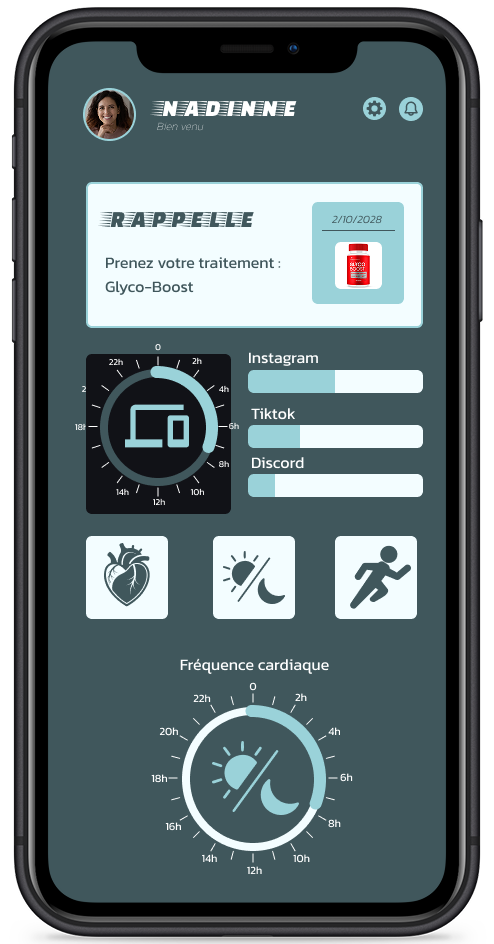
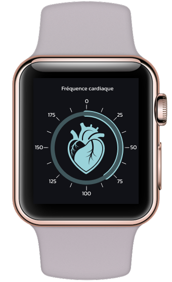
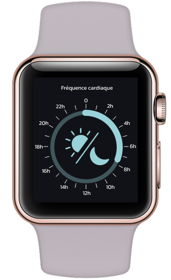

Dopa- Mine
Dopa-app
Dopa-App sera une application mobile qui suivra votre état de santé. Compatible avec les montres connectées, elle mesurera votre fréquence cardiaque, votre temps de sommeil ainsi que votre temps d'écran. Elle vous accompagnera également dans votre pratique sportive et vous rappellera quand prendre votre traitement ou quand l’arrêter.


fréquence cardiaque
La fréquence cardiaque sera mesurée via votre téléphone ou votre montre connectée. Comme celle-ci peut augmenter ou diminuer avec la prise de stimulants, cela permettra à l’application de s’adapter en fonction de vos besoins et de vous proposer un suivi personnalisé.
Temps d'écran
L’application vous indiquera quand faire des pauses dans votre travail ou quand vous devrez vous déconnecter des réseaux sociaux. Vous pourrez synchroniser votre téléphone et vos appareils numériques pour différencier votre temps de travail et votre temps d’écran sur les réseaux.

heures de sommeil
Le temps de sommeil sera mesuré avec votre téléphone grâce aux capteurs audio ou via votre montre connectée. Le sommeil varie d’une personne à l’autre, mais l’insomnie ou l’hypersomnie peuvent être liées à la prise de stimulants. C’est pourquoi l’application suivra votre état de santé, afin d’adapter la prise de stimulants en fonction de vos besoins réels.
Sport
Dans la partie sport, vous pourrez sélectionner votre activité. L’application vous indiquera votre distance parcourue, calculera vos calories brûlées et proposera un minuteur pour vos séries. En fonction du sport choisi, l’app vous suggérera des stimulants pour être au top de vos performances.
Suivi
Toutes les données cumulées permettront à l’application de vous aiguiller au mieux dans la prise de vos stimulants et de s'adapter à vos besoins. Vous pourrez retrouver ces produits en pharmacie et ils seront remboursés par la mutuelle.